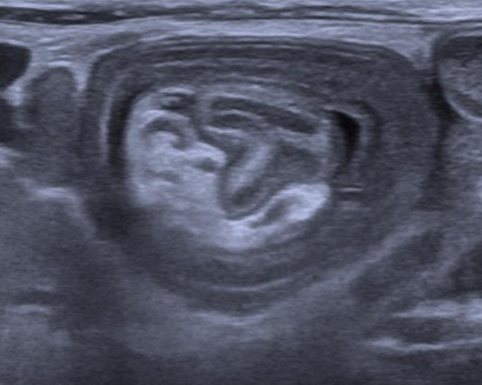
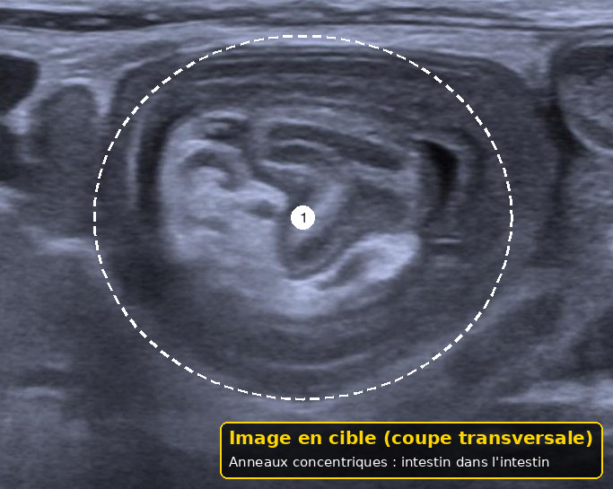

Nourrisson irritable ou qui pleure
Taille : mesurée par le script du dépôt.
L'essentiel
Nourrisson irritable ou qui pleure : les critères, les signes d'alarme et les doses lues sont dans les fenêtres.
1. Définition
Le détail est dans la fenêtre.
Le motif est un nourrisson irritable ou qui pleure, pas un diagnostic unique.1
On sépare les pleurs habituels du premier trimestre d'un pleur qui a changé, qui dure, ou qui s'accompagne d'un signe malade.1
Les coliques cliniques de 2016 exigent un âge de moins de 5 mois, des périodes prolongées impossibles à calmer, et l'absence de fièvre, de maladie et de cassure de croissance.1
La règle des trois heures n'est plus exigée pour nommer les coliques en clinique.1
Elle reste un critère de recherche, avec un agenda.1
À l'arrivée, pour ce nourrisson qui pleure, on juge la couleur et le tonus avant le récit.
À l'arrivée, pour ce nourrisson qui pleure, on n'écrit pas reflux s'il y a un retentissement.
À l'arrivée, pour ce nourrisson qui pleure, on laisse à jeun un vomissement vert.
Après le déshabillage, pour ce nourrisson qui pleure, on sépare le pic des premières semaines d'un cri nouveau.
Après le déshabillage, pour ce nourrisson qui pleure, on ne mélange pas l'ordre de fréquence et l'ordre de gravité.
Avant l'ordonnance, pour ce nourrisson qui pleure, on demande si le vomissement est vert.
Avant l'ordonnance, pour ce nourrisson qui pleure, on note qui accompagne l'enfant.
Si le cri persiste, pour ce nourrisson qui pleure, on compte les orteils et les doigts.
Si le cri persiste, pour ce nourrisson qui pleure, on garde l'enfant si le tonus chute.
Avant le retour à domicile, pour ce nourrisson qui pleure, on ausculte et on cherche les fémorales.
Avant le retour à domicile, pour ce nourrisson qui pleure, on vérifie les autres boîtes de paracétamol.
Quand la famille rappelle, pour ce nourrisson qui pleure, on regarde les deux cornées.
Quand la famille rappelle, pour ce nourrisson qui pleure, on fixe l'heure d'un nouveau contrôle.
Dans le compte rendu, pour ce nourrisson qui pleure, on compare le poids au carnet.
Dans le compte rendu, pour ce nourrisson qui pleure, on dit de ne jamais secouer.
Si un signe nouveau apparaît, pour ce nourrisson qui pleure, on juge la couleur et le tonus avant le récit.
Si un signe nouveau apparaît, pour ce nourrisson qui pleure, on n'écrit pas reflux s'il y a un retentissement.
Si un signe nouveau apparaît, pour ce nourrisson qui pleure, on laisse à jeun un vomissement vert.
À la visite de contrôle, pour ce nourrisson qui pleure, on sépare le pic des premières semaines d'un cri nouveau.
À la visite de contrôle, pour ce nourrisson qui pleure, on ne mélange pas l'ordre de fréquence et l'ordre de gravité.
Devant les deux parents, pour ce nourrisson qui pleure, on demande si le vomissement est vert.
Devant les deux parents, pour ce nourrisson qui pleure, on note qui accompagne l'enfant.
Au moment de la pesée, pour ce nourrisson qui pleure, on compte les orteils et les doigts.
Au moment de la pesée, pour ce nourrisson qui pleure, on garde l'enfant si le tonus chute.
Après la prise de température, pour ce nourrisson qui pleure, on ausculte et on cherche les fémorales.
Après la prise de température, pour ce nourrisson qui pleure, on vérifie les autres boîtes de paracétamol.
À l'arrivée, pour ce nourrisson qui pleure, on regarde les deux cornées, noté au passage 2.
À l'arrivée, pour ce nourrisson qui pleure, on fixe l'heure d'un nouveau contrôle, noté au passage 2.
Après le déshabillage, pour ce nourrisson qui pleure, on compare le poids au carnet, noté au passage 2.
Après le déshabillage, pour ce nourrisson qui pleure, on dit de ne jamais secouer, noté au passage 2.
Avant l'ordonnance, pour ce nourrisson qui pleure, on juge la couleur et le tonus avant le récit, noté au passage 2.
Avant l'ordonnance, pour ce nourrisson qui pleure, on n'écrit pas reflux s'il y a un retentissement, noté au passage 2.
Avant l'ordonnance, pour ce nourrisson qui pleure, on laisse à jeun un vomissement vert, noté au passage 2.
Si le cri persiste, pour ce nourrisson qui pleure, on sépare le pic des premières semaines d'un cri nouveau, noté au passage 2.
Si le cri persiste, pour ce nourrisson qui pleure, on ne mélange pas l'ordre de fréquence et l'ordre de gravité, noté au passage 2.
Avant le retour à domicile, pour ce nourrisson qui pleure, on demande si le vomissement est vert, noté au passage 2.
Avant le retour à domicile, pour ce nourrisson qui pleure, on note qui accompagne l'enfant, noté au passage 2.
Quand la famille rappelle, pour ce nourrisson qui pleure, on compte les orteils et les doigts, noté au passage 2.
Quand la famille rappelle, pour ce nourrisson qui pleure, on garde l'enfant si le tonus chute, noté au passage 2.
Dans le compte rendu, pour ce nourrisson qui pleure, on ausculte et on cherche les fémorales, noté au passage 2.
Dans le compte rendu, pour ce nourrisson qui pleure, on vérifie les autres boîtes de paracétamol, noté au passage 2.
Si un signe nouveau apparaît, pour ce nourrisson qui pleure, on regarde les deux cornées, noté au passage 2.
Si un signe nouveau apparaît, pour ce nourrisson qui pleure, on fixe l'heure d'un nouveau contrôle, noté au passage 2.
À la visite de contrôle, pour ce nourrisson qui pleure, on compare le poids au carnet, noté au passage 2.
À la visite de contrôle, pour ce nourrisson qui pleure, on dit de ne jamais secouer, noté au passage 2.
Devant les deux parents, pour ce nourrisson qui pleure, on juge la couleur et le tonus avant le récit, noté au passage 2.
2. Épidémiologie
Le détail est dans la fenêtre.
La fiche francophone de 2018 situe la fréquence des coliques entre 20 et 25 pour cent dans les pays industrialisés.4
Le texte européen de 2024 situe les pleurs et l'irritabilité autour de 20 pour cent des nourrissons.4
L'allergie au lait en est rarement la cause.4
Aucune incidence suisse unique ne classe les dix diagnostics de ce motif.4
L'ordre des fichiers suit la fréquence habituelle du motif. L'ordre E suit le danger à écarter.4
À l'arrivée, pour ce nourrisson qui pleure, on déshabille complètement.
À l'arrivée, pour ce nourrisson qui pleure, on n'écrit pas allergie sur un cri sec.
À l'arrivée, pour ce nourrisson qui pleure, on photographie une lésion cutanée utile au suivi.
Après le déshabillage, pour ce nourrisson qui pleure, on n'écrit pas colique s'il y a de la fièvre.
Après le déshabillage, pour ce nourrisson qui pleure, on cite l'autorisation si une dose est écrite.
Avant l'ordonnance, pour ce nourrisson qui pleure, on demande si le cri a changé aujourd'hui.
Avant l'ordonnance, pour ce nourrisson qui pleure, on relit les trois critères de 2016 avant de rassurer.
Si le cri persiste, pour ce nourrisson qui pleure, on lit la couche.
Si le cri persiste, pour ce nourrisson qui pleure, on appelle si le ventre devient chirurgical.
Avant le retour à domicile, pour ce nourrisson qui pleure, on ouvre la couche et les aines.
Avant le retour à domicile, pour ce nourrisson qui pleure, on ne promet pas un médicament des pleurs.
Quand la famille rappelle, pour ce nourrisson qui pleure, on palpe les fontanelles.
Quand la famille rappelle, pour ce nourrisson qui pleure, on écrit le signe qui ferait revenir.
Dans le compte rendu, pour ce nourrisson qui pleure, on prend la température.
Dans le compte rendu, pour ce nourrisson qui pleure, on propose un relais humain.
Si un signe nouveau apparaît, pour ce nourrisson qui pleure, on déshabille complètement.
Si un signe nouveau apparaît, pour ce nourrisson qui pleure, on n'écrit pas allergie sur un cri sec.
Si un signe nouveau apparaît, pour ce nourrisson qui pleure, on photographie une lésion cutanée utile au suivi.
À la visite de contrôle, pour ce nourrisson qui pleure, on n'écrit pas colique s'il y a de la fièvre.
À la visite de contrôle, pour ce nourrisson qui pleure, on cite l'autorisation si une dose est écrite.
Devant les deux parents, pour ce nourrisson qui pleure, on demande si le cri a changé aujourd'hui.
Devant les deux parents, pour ce nourrisson qui pleure, on relit les trois critères de 2016 avant de rassurer.
Au moment de la pesée, pour ce nourrisson qui pleure, on lit la couche.
Au moment de la pesée, pour ce nourrisson qui pleure, on appelle si le ventre devient chirurgical.
Après la prise de température, pour ce nourrisson qui pleure, on ouvre la couche et les aines.
Après la prise de température, pour ce nourrisson qui pleure, on ne promet pas un médicament des pleurs.
À l'arrivée, pour ce nourrisson qui pleure, on palpe les fontanelles, noté au passage 2.
À l'arrivée, pour ce nourrisson qui pleure, on écrit le signe qui ferait revenir, noté au passage 2.
Après le déshabillage, pour ce nourrisson qui pleure, on prend la température, noté au passage 2.
Après le déshabillage, pour ce nourrisson qui pleure, on propose un relais humain, noté au passage 2.
Avant l'ordonnance, pour ce nourrisson qui pleure, on déshabille complètement, noté au passage 2.
Avant l'ordonnance, pour ce nourrisson qui pleure, on n'écrit pas allergie sur un cri sec, noté au passage 2.
Avant l'ordonnance, pour ce nourrisson qui pleure, on photographie une lésion cutanée utile au suivi, noté au passage 2.
Si le cri persiste, pour ce nourrisson qui pleure, on n'écrit pas colique s'il y a de la fièvre, noté au passage 2.
Si le cri persiste, pour ce nourrisson qui pleure, on cite l'autorisation si une dose est écrite, noté au passage 2.
Avant le retour à domicile, pour ce nourrisson qui pleure, on demande si le cri a changé aujourd'hui, noté au passage 2.
Avant le retour à domicile, pour ce nourrisson qui pleure, on relit les trois critères de 2016 avant de rassurer, noté au passage 2.
Quand la famille rappelle, pour ce nourrisson qui pleure, on lit la couche, noté au passage 2.
Quand la famille rappelle, pour ce nourrisson qui pleure, on appelle si le ventre devient chirurgical, noté au passage 2.
Dans le compte rendu, pour ce nourrisson qui pleure, on ouvre la couche et les aines, noté au passage 2.
Dans le compte rendu, pour ce nourrisson qui pleure, on ne promet pas un médicament des pleurs, noté au passage 2.
Si un signe nouveau apparaît, pour ce nourrisson qui pleure, on palpe les fontanelles, noté au passage 2.
Si un signe nouveau apparaît, pour ce nourrisson qui pleure, on écrit le signe qui ferait revenir, noté au passage 2.
À la visite de contrôle, pour ce nourrisson qui pleure, on prend la température, noté au passage 2.
À la visite de contrôle, pour ce nourrisson qui pleure, on propose un relais humain, noté au passage 2.
Devant les deux parents, pour ce nourrisson qui pleure, on déshabille complètement, noté au passage 2.
3. Physiopathologie
Le détail est dans la fenêtre.
Le pic des pleurs sains se situe vers 4 à 6 semaines et diminue vers 12 semaines.1
Le texte de 2016 dit qu'il n'y a pas de preuve que ces pleurs viennent d'une douleur du ventre.1
Une infection, une occlusion, une ecchymose ou une cornée trouble ont un autre mécanisme.1
Le canal artériel qui se ferme peut révéler une cardiopathie, sous forme de pâleur, de fatigue alimentaire et d'irritabilité.1
Le jour exact de cette fermeture n'est pas fixé par une source archivée ici.1
À l'arrivée, pour ce nourrisson qui pleure, on compare le poids au carnet.
À l'arrivée, pour ce nourrisson qui pleure, on dit de ne jamais secouer.
Après le déshabillage, pour ce nourrisson qui pleure, on juge la couleur et le tonus avant le récit.
Après le déshabillage, pour ce nourrisson qui pleure, on n'écrit pas reflux s'il y a un retentissement.
Après le déshabillage, pour ce nourrisson qui pleure, on laisse à jeun un vomissement vert.
Avant l'ordonnance, pour ce nourrisson qui pleure, on sépare le pic des premières semaines d'un cri nouveau.
Avant l'ordonnance, pour ce nourrisson qui pleure, on ne mélange pas l'ordre de fréquence et l'ordre de gravité.
Si le cri persiste, pour ce nourrisson qui pleure, on demande si le vomissement est vert.
Si le cri persiste, pour ce nourrisson qui pleure, on note qui accompagne l'enfant.
Avant le retour à domicile, pour ce nourrisson qui pleure, on compte les orteils et les doigts.
Avant le retour à domicile, pour ce nourrisson qui pleure, on garde l'enfant si le tonus chute.
Quand la famille rappelle, pour ce nourrisson qui pleure, on ausculte et on cherche les fémorales.
Quand la famille rappelle, pour ce nourrisson qui pleure, on vérifie les autres boîtes de paracétamol.
Dans le compte rendu, pour ce nourrisson qui pleure, on regarde les deux cornées.
Dans le compte rendu, pour ce nourrisson qui pleure, on fixe l'heure d'un nouveau contrôle.
Si un signe nouveau apparaît, pour ce nourrisson qui pleure, on compare le poids au carnet.
Si un signe nouveau apparaît, pour ce nourrisson qui pleure, on dit de ne jamais secouer.
À la visite de contrôle, pour ce nourrisson qui pleure, on juge la couleur et le tonus avant le récit.
À la visite de contrôle, pour ce nourrisson qui pleure, on n'écrit pas reflux s'il y a un retentissement.
À la visite de contrôle, pour ce nourrisson qui pleure, on laisse à jeun un vomissement vert.
Devant les deux parents, pour ce nourrisson qui pleure, on sépare le pic des premières semaines d'un cri nouveau.
Devant les deux parents, pour ce nourrisson qui pleure, on ne mélange pas l'ordre de fréquence et l'ordre de gravité.
Au moment de la pesée, pour ce nourrisson qui pleure, on demande si le vomissement est vert.
Au moment de la pesée, pour ce nourrisson qui pleure, on note qui accompagne l'enfant.
Après la prise de température, pour ce nourrisson qui pleure, on compte les orteils et les doigts.
Après la prise de température, pour ce nourrisson qui pleure, on garde l'enfant si le tonus chute.
À l'arrivée, pour ce nourrisson qui pleure, on ausculte et on cherche les fémorales, noté au passage 2.
À l'arrivée, pour ce nourrisson qui pleure, on vérifie les autres boîtes de paracétamol, noté au passage 2.
Après le déshabillage, pour ce nourrisson qui pleure, on regarde les deux cornées, noté au passage 2.
Après le déshabillage, pour ce nourrisson qui pleure, on fixe l'heure d'un nouveau contrôle, noté au passage 2.
Avant l'ordonnance, pour ce nourrisson qui pleure, on compare le poids au carnet, noté au passage 2.
Avant l'ordonnance, pour ce nourrisson qui pleure, on dit de ne jamais secouer, noté au passage 2.
Si le cri persiste, pour ce nourrisson qui pleure, on juge la couleur et le tonus avant le récit, noté au passage 2.
Si le cri persiste, pour ce nourrisson qui pleure, on n'écrit pas reflux s'il y a un retentissement, noté au passage 2.
Si le cri persiste, pour ce nourrisson qui pleure, on laisse à jeun un vomissement vert, noté au passage 2.
Avant le retour à domicile, pour ce nourrisson qui pleure, on sépare le pic des premières semaines d'un cri nouveau, noté au passage 2.
Avant le retour à domicile, pour ce nourrisson qui pleure, on ne mélange pas l'ordre de fréquence et l'ordre de gravité, noté au passage 2.
Quand la famille rappelle, pour ce nourrisson qui pleure, on demande si le vomissement est vert, noté au passage 2.
Quand la famille rappelle, pour ce nourrisson qui pleure, on note qui accompagne l'enfant, noté au passage 2.
Dans le compte rendu, pour ce nourrisson qui pleure, on compte les orteils et les doigts, noté au passage 2.
Dans le compte rendu, pour ce nourrisson qui pleure, on garde l'enfant si le tonus chute, noté au passage 2.
Si un signe nouveau apparaît, pour ce nourrisson qui pleure, on ausculte et on cherche les fémorales, noté au passage 2.
Si un signe nouveau apparaît, pour ce nourrisson qui pleure, on vérifie les autres boîtes de paracétamol, noté au passage 2.
À la visite de contrôle, pour ce nourrisson qui pleure, on regarde les deux cornées, noté au passage 2.
À la visite de contrôle, pour ce nourrisson qui pleure, on fixe l'heure d'un nouveau contrôle, noté au passage 2.
Devant les deux parents, pour ce nourrisson qui pleure, on compare le poids au carnet, noté au passage 2.
4. Démarche diagnostique
Le détail est dans la fenêtre.
La première minute juge la couleur, le tonus, la respiration et la chaleur des extrémités.3
On déshabille tout le corps, y compris les doigts, les orteils et les plis.3
On pèse et on compare à la courbe précédente.3
On prend la température.3
Un enfant gris, mou, ou impossible à réveiller sort de la filière des coliques.3
À l'arrivée, pour ce nourrisson qui pleure, on prend la température.
À l'arrivée, pour ce nourrisson qui pleure, on propose un relais humain.
Après le déshabillage, pour ce nourrisson qui pleure, on déshabille complètement.
Après le déshabillage, pour ce nourrisson qui pleure, on n'écrit pas allergie sur un cri sec.
Après le déshabillage, pour ce nourrisson qui pleure, on photographie une lésion cutanée utile au suivi.
Avant l'ordonnance, pour ce nourrisson qui pleure, on n'écrit pas colique s'il y a de la fièvre.
Avant l'ordonnance, pour ce nourrisson qui pleure, on cite l'autorisation si une dose est écrite.
Si le cri persiste, pour ce nourrisson qui pleure, on demande si le cri a changé aujourd'hui.
Si le cri persiste, pour ce nourrisson qui pleure, on relit les trois critères de 2016 avant de rassurer.
Avant le retour à domicile, pour ce nourrisson qui pleure, on lit la couche.
Avant le retour à domicile, pour ce nourrisson qui pleure, on appelle si le ventre devient chirurgical.
Quand la famille rappelle, pour ce nourrisson qui pleure, on ouvre la couche et les aines.
Quand la famille rappelle, pour ce nourrisson qui pleure, on ne promet pas un médicament des pleurs.
Dans le compte rendu, pour ce nourrisson qui pleure, on palpe les fontanelles.
Dans le compte rendu, pour ce nourrisson qui pleure, on écrit le signe qui ferait revenir.
Si un signe nouveau apparaît, pour ce nourrisson qui pleure, on prend la température.
Si un signe nouveau apparaît, pour ce nourrisson qui pleure, on propose un relais humain.
À la visite de contrôle, pour ce nourrisson qui pleure, on déshabille complètement.
À la visite de contrôle, pour ce nourrisson qui pleure, on n'écrit pas allergie sur un cri sec.
À la visite de contrôle, pour ce nourrisson qui pleure, on photographie une lésion cutanée utile au suivi.
Devant les deux parents, pour ce nourrisson qui pleure, on n'écrit pas colique s'il y a de la fièvre.
Devant les deux parents, pour ce nourrisson qui pleure, on cite l'autorisation si une dose est écrite.
Au moment de la pesée, pour ce nourrisson qui pleure, on demande si le cri a changé aujourd'hui.
Au moment de la pesée, pour ce nourrisson qui pleure, on relit les trois critères de 2016 avant de rassurer.
Après la prise de température, pour ce nourrisson qui pleure, on lit la couche.
Après la prise de température, pour ce nourrisson qui pleure, on appelle si le ventre devient chirurgical.
À l'arrivée, pour ce nourrisson qui pleure, on ouvre la couche et les aines, noté au passage 2.
À l'arrivée, pour ce nourrisson qui pleure, on ne promet pas un médicament des pleurs, noté au passage 2.
Après le déshabillage, pour ce nourrisson qui pleure, on palpe les fontanelles, noté au passage 2.
Après le déshabillage, pour ce nourrisson qui pleure, on écrit le signe qui ferait revenir, noté au passage 2.
Avant l'ordonnance, pour ce nourrisson qui pleure, on prend la température, noté au passage 2.
Avant l'ordonnance, pour ce nourrisson qui pleure, on propose un relais humain, noté au passage 2.
Si le cri persiste, pour ce nourrisson qui pleure, on déshabille complètement, noté au passage 2.
Si le cri persiste, pour ce nourrisson qui pleure, on n'écrit pas allergie sur un cri sec, noté au passage 2.
Si le cri persiste, pour ce nourrisson qui pleure, on photographie une lésion cutanée utile au suivi, noté au passage 2.
Avant le retour à domicile, pour ce nourrisson qui pleure, on n'écrit pas colique s'il y a de la fièvre, noté au passage 2.
Avant le retour à domicile, pour ce nourrisson qui pleure, on cite l'autorisation si une dose est écrite, noté au passage 2.
Quand la famille rappelle, pour ce nourrisson qui pleure, on demande si le cri a changé aujourd'hui, noté au passage 2.
Quand la famille rappelle, pour ce nourrisson qui pleure, on relit les trois critères de 2016 avant de rassurer, noté au passage 2.
Dans le compte rendu, pour ce nourrisson qui pleure, on lit la couche, noté au passage 2.
Dans le compte rendu, pour ce nourrisson qui pleure, on appelle si le ventre devient chirurgical, noté au passage 2.
Si un signe nouveau apparaît, pour ce nourrisson qui pleure, on ouvre la couche et les aines, noté au passage 2.
Si un signe nouveau apparaît, pour ce nourrisson qui pleure, on ne promet pas un médicament des pleurs, noté au passage 2.
À la visite de contrôle, pour ce nourrisson qui pleure, on palpe les fontanelles, noté au passage 2.
À la visite de contrôle, pour ce nourrisson qui pleure, on écrit le signe qui ferait revenir, noté au passage 2.
Devant les deux parents, pour ce nourrisson qui pleure, on prend la température, noté au passage 2.
5. Anamnèse et drapeaux rouges
Le détail est dans la fenêtre.
On demande depuis quand les pleurs ont changé, et s'ils cessent dans les bras.5
On demande la fièvre, les vomissements, la couleur des selles et des urines, et un traumatisme.5
Un vomissement vert est un signe d'occlusion dans le guide de 2018.5
Une fontanelle bombée ou un périmètre qui grossit vite font chercher une hypertension intracrânienne.5
Des ecchymoses chez un nourrisson de moins de 5 mois ne se rangent pas dans un jeu.5
À l'arrivée, pour ce nourrisson qui pleure, on regarde les deux cornées.
À l'arrivée, pour ce nourrisson qui pleure, on fixe l'heure d'un nouveau contrôle.
Après le déshabillage, pour ce nourrisson qui pleure, on compare le poids au carnet.
Après le déshabillage, pour ce nourrisson qui pleure, on dit de ne jamais secouer.
Avant l'ordonnance, pour ce nourrisson qui pleure, on juge la couleur et le tonus avant le récit.
Avant l'ordonnance, pour ce nourrisson qui pleure, on n'écrit pas reflux s'il y a un retentissement.
Avant l'ordonnance, pour ce nourrisson qui pleure, on laisse à jeun un vomissement vert.
Si le cri persiste, pour ce nourrisson qui pleure, on sépare le pic des premières semaines d'un cri nouveau.
Si le cri persiste, pour ce nourrisson qui pleure, on ne mélange pas l'ordre de fréquence et l'ordre de gravité.
Avant le retour à domicile, pour ce nourrisson qui pleure, on demande si le vomissement est vert.
Avant le retour à domicile, pour ce nourrisson qui pleure, on note qui accompagne l'enfant.
Quand la famille rappelle, pour ce nourrisson qui pleure, on compte les orteils et les doigts.
Quand la famille rappelle, pour ce nourrisson qui pleure, on garde l'enfant si le tonus chute.
Dans le compte rendu, pour ce nourrisson qui pleure, on ausculte et on cherche les fémorales.
Dans le compte rendu, pour ce nourrisson qui pleure, on vérifie les autres boîtes de paracétamol.
Si un signe nouveau apparaît, pour ce nourrisson qui pleure, on regarde les deux cornées.
Si un signe nouveau apparaît, pour ce nourrisson qui pleure, on fixe l'heure d'un nouveau contrôle.
À la visite de contrôle, pour ce nourrisson qui pleure, on compare le poids au carnet.
À la visite de contrôle, pour ce nourrisson qui pleure, on dit de ne jamais secouer.
Devant les deux parents, pour ce nourrisson qui pleure, on juge la couleur et le tonus avant le récit.
Devant les deux parents, pour ce nourrisson qui pleure, on n'écrit pas reflux s'il y a un retentissement.
Devant les deux parents, pour ce nourrisson qui pleure, on laisse à jeun un vomissement vert.
Au moment de la pesée, pour ce nourrisson qui pleure, on sépare le pic des premières semaines d'un cri nouveau.
Au moment de la pesée, pour ce nourrisson qui pleure, on ne mélange pas l'ordre de fréquence et l'ordre de gravité.
Après la prise de température, pour ce nourrisson qui pleure, on demande si le vomissement est vert.
Après la prise de température, pour ce nourrisson qui pleure, on note qui accompagne l'enfant.
À l'arrivée, pour ce nourrisson qui pleure, on compte les orteils et les doigts, noté au passage 2.
À l'arrivée, pour ce nourrisson qui pleure, on garde l'enfant si le tonus chute, noté au passage 2.
Après le déshabillage, pour ce nourrisson qui pleure, on ausculte et on cherche les fémorales, noté au passage 2.
Après le déshabillage, pour ce nourrisson qui pleure, on vérifie les autres boîtes de paracétamol, noté au passage 2.
Avant l'ordonnance, pour ce nourrisson qui pleure, on regarde les deux cornées, noté au passage 2.
Avant l'ordonnance, pour ce nourrisson qui pleure, on fixe l'heure d'un nouveau contrôle, noté au passage 2.
Si le cri persiste, pour ce nourrisson qui pleure, on compare le poids au carnet, noté au passage 2.
Si le cri persiste, pour ce nourrisson qui pleure, on dit de ne jamais secouer, noté au passage 2.
Avant le retour à domicile, pour ce nourrisson qui pleure, on juge la couleur et le tonus avant le récit, noté au passage 2.
Avant le retour à domicile, pour ce nourrisson qui pleure, on n'écrit pas reflux s'il y a un retentissement, noté au passage 2.
Avant le retour à domicile, pour ce nourrisson qui pleure, on laisse à jeun un vomissement vert, noté au passage 2.
Quand la famille rappelle, pour ce nourrisson qui pleure, on sépare le pic des premières semaines d'un cri nouveau, noté au passage 2.
Quand la famille rappelle, pour ce nourrisson qui pleure, on ne mélange pas l'ordre de fréquence et l'ordre de gravité, noté au passage 2.
Dans le compte rendu, pour ce nourrisson qui pleure, on demande si le vomissement est vert, noté au passage 2.
Dans le compte rendu, pour ce nourrisson qui pleure, on note qui accompagne l'enfant, noté au passage 2.
Si un signe nouveau apparaît, pour ce nourrisson qui pleure, on compte les orteils et les doigts, noté au passage 2.
Si un signe nouveau apparaît, pour ce nourrisson qui pleure, on garde l'enfant si le tonus chute, noté au passage 2.
À la visite de contrôle, pour ce nourrisson qui pleure, on ausculte et on cherche les fémorales, noté au passage 2.
À la visite de contrôle, pour ce nourrisson qui pleure, on vérifie les autres boîtes de paracétamol, noté au passage 2.
Devant les deux parents, pour ce nourrisson qui pleure, on regarde les deux cornées, noté au passage 2.
6. Examen physique
Le détail est dans la fenêtre.
L'examen regarde les yeux, les oreilles, la bouche, le cou, le cœur, les pouls fémoraux, le ventre, les orifices herniaires, les organes génitaux, la peau et chaque doigt.15
On cherche un fil serré autour d'un orteil, d'un doigt ou du pénis.15
On cherche une cornée grande ou trouble, une photophobie et un larmoiement.15
On palpe les fontanelles et on mesure le périmètre si la tête inquiète.15
Un ventre distendu, silencieux ou défenseux n'est pas une colique.15
À l'arrivée, pour ce nourrisson qui pleure, on palpe les fontanelles.
À l'arrivée, pour ce nourrisson qui pleure, on écrit le signe qui ferait revenir.
Après le déshabillage, pour ce nourrisson qui pleure, on prend la température.
Après le déshabillage, pour ce nourrisson qui pleure, on propose un relais humain.
Avant l'ordonnance, pour ce nourrisson qui pleure, on déshabille complètement.
Avant l'ordonnance, pour ce nourrisson qui pleure, on n'écrit pas allergie sur un cri sec.
Avant l'ordonnance, pour ce nourrisson qui pleure, on photographie une lésion cutanée utile au suivi.
Si le cri persiste, pour ce nourrisson qui pleure, on n'écrit pas colique s'il y a de la fièvre.
Si le cri persiste, pour ce nourrisson qui pleure, on cite l'autorisation si une dose est écrite.
Avant le retour à domicile, pour ce nourrisson qui pleure, on demande si le cri a changé aujourd'hui.
Avant le retour à domicile, pour ce nourrisson qui pleure, on relit les trois critères de 2016 avant de rassurer.
Quand la famille rappelle, pour ce nourrisson qui pleure, on lit la couche.
Quand la famille rappelle, pour ce nourrisson qui pleure, on appelle si le ventre devient chirurgical.
Dans le compte rendu, pour ce nourrisson qui pleure, on ouvre la couche et les aines.
Dans le compte rendu, pour ce nourrisson qui pleure, on ne promet pas un médicament des pleurs.
Si un signe nouveau apparaît, pour ce nourrisson qui pleure, on palpe les fontanelles.
Si un signe nouveau apparaît, pour ce nourrisson qui pleure, on écrit le signe qui ferait revenir.
À la visite de contrôle, pour ce nourrisson qui pleure, on prend la température.
À la visite de contrôle, pour ce nourrisson qui pleure, on propose un relais humain.
Devant les deux parents, pour ce nourrisson qui pleure, on déshabille complètement.
Devant les deux parents, pour ce nourrisson qui pleure, on n'écrit pas allergie sur un cri sec.
Devant les deux parents, pour ce nourrisson qui pleure, on photographie une lésion cutanée utile au suivi.
Au moment de la pesée, pour ce nourrisson qui pleure, on n'écrit pas colique s'il y a de la fièvre.
Au moment de la pesée, pour ce nourrisson qui pleure, on cite l'autorisation si une dose est écrite.
Après la prise de température, pour ce nourrisson qui pleure, on demande si le cri a changé aujourd'hui.
Après la prise de température, pour ce nourrisson qui pleure, on relit les trois critères de 2016 avant de rassurer.
À l'arrivée, pour ce nourrisson qui pleure, on lit la couche, noté au passage 2.
À l'arrivée, pour ce nourrisson qui pleure, on appelle si le ventre devient chirurgical, noté au passage 2.
Après le déshabillage, pour ce nourrisson qui pleure, on ouvre la couche et les aines, noté au passage 2.
Après le déshabillage, pour ce nourrisson qui pleure, on ne promet pas un médicament des pleurs, noté au passage 2.
Avant l'ordonnance, pour ce nourrisson qui pleure, on palpe les fontanelles, noté au passage 2.
Avant l'ordonnance, pour ce nourrisson qui pleure, on écrit le signe qui ferait revenir, noté au passage 2.
Si le cri persiste, pour ce nourrisson qui pleure, on prend la température, noté au passage 2.
Si le cri persiste, pour ce nourrisson qui pleure, on propose un relais humain, noté au passage 2.
Avant le retour à domicile, pour ce nourrisson qui pleure, on déshabille complètement, noté au passage 2.
Avant le retour à domicile, pour ce nourrisson qui pleure, on n'écrit pas allergie sur un cri sec, noté au passage 2.
Avant le retour à domicile, pour ce nourrisson qui pleure, on photographie une lésion cutanée utile au suivi, noté au passage 2.
Quand la famille rappelle, pour ce nourrisson qui pleure, on n'écrit pas colique s'il y a de la fièvre, noté au passage 2.
Quand la famille rappelle, pour ce nourrisson qui pleure, on cite l'autorisation si une dose est écrite, noté au passage 2.
Dans le compte rendu, pour ce nourrisson qui pleure, on demande si le cri a changé aujourd'hui, noté au passage 2.
Dans le compte rendu, pour ce nourrisson qui pleure, on relit les trois critères de 2016 avant de rassurer, noté au passage 2.
Si un signe nouveau apparaît, pour ce nourrisson qui pleure, on lit la couche, noté au passage 2.
Si un signe nouveau apparaît, pour ce nourrisson qui pleure, on appelle si le ventre devient chirurgical, noté au passage 2.
À la visite de contrôle, pour ce nourrisson qui pleure, on ouvre la couche et les aines, noté au passage 2.
À la visite de contrôle, pour ce nourrisson qui pleure, on ne promet pas un médicament des pleurs, noté au passage 2.
Devant les deux parents, pour ce nourrisson qui pleure, on palpe les fontanelles, noté au passage 2.
7. Approche syndromique
Le détail est dans la fenêtre.
Le groupe fièvre et tonus bas oriente vers l'infection.5
Le groupe vomissement vert ou ventre aigu oriente vers le chirurgien.5
Le groupe sang dans les selles et douleurs par vagues oriente vers l'invagination.5
Le groupe ecchymose, récit changeant ou retard de recours oriente vers la protection.5
Le groupe régurgitations chez un enfant qui grossit bien reste souvent un reflux simple.5
À l'arrivée, pour ce nourrisson qui pleure, on ausculte et on cherche les fémorales.
À l'arrivée, pour ce nourrisson qui pleure, on vérifie les autres boîtes de paracétamol.
Après le déshabillage, pour ce nourrisson qui pleure, on regarde les deux cornées.
Après le déshabillage, pour ce nourrisson qui pleure, on fixe l'heure d'un nouveau contrôle.
Avant l'ordonnance, pour ce nourrisson qui pleure, on compare le poids au carnet.
Avant l'ordonnance, pour ce nourrisson qui pleure, on dit de ne jamais secouer.
Si le cri persiste, pour ce nourrisson qui pleure, on juge la couleur et le tonus avant le récit.
Si le cri persiste, pour ce nourrisson qui pleure, on n'écrit pas reflux s'il y a un retentissement.
Si le cri persiste, pour ce nourrisson qui pleure, on laisse à jeun un vomissement vert.
Avant le retour à domicile, pour ce nourrisson qui pleure, on sépare le pic des premières semaines d'un cri nouveau.
Avant le retour à domicile, pour ce nourrisson qui pleure, on ne mélange pas l'ordre de fréquence et l'ordre de gravité.
Quand la famille rappelle, pour ce nourrisson qui pleure, on demande si le vomissement est vert.
Quand la famille rappelle, pour ce nourrisson qui pleure, on note qui accompagne l'enfant.
Dans le compte rendu, pour ce nourrisson qui pleure, on compte les orteils et les doigts.
Dans le compte rendu, pour ce nourrisson qui pleure, on garde l'enfant si le tonus chute.
Si un signe nouveau apparaît, pour ce nourrisson qui pleure, on ausculte et on cherche les fémorales.
Si un signe nouveau apparaît, pour ce nourrisson qui pleure, on vérifie les autres boîtes de paracétamol.
À la visite de contrôle, pour ce nourrisson qui pleure, on regarde les deux cornées.
À la visite de contrôle, pour ce nourrisson qui pleure, on fixe l'heure d'un nouveau contrôle.
Devant les deux parents, pour ce nourrisson qui pleure, on compare le poids au carnet.
Devant les deux parents, pour ce nourrisson qui pleure, on dit de ne jamais secouer.
Au moment de la pesée, pour ce nourrisson qui pleure, on juge la couleur et le tonus avant le récit.
Au moment de la pesée, pour ce nourrisson qui pleure, on n'écrit pas reflux s'il y a un retentissement.
Au moment de la pesée, pour ce nourrisson qui pleure, on laisse à jeun un vomissement vert.
Après la prise de température, pour ce nourrisson qui pleure, on sépare le pic des premières semaines d'un cri nouveau.
Après la prise de température, pour ce nourrisson qui pleure, on ne mélange pas l'ordre de fréquence et l'ordre de gravité.
À l'arrivée, pour ce nourrisson qui pleure, on demande si le vomissement est vert, noté au passage 2.
À l'arrivée, pour ce nourrisson qui pleure, on note qui accompagne l'enfant, noté au passage 2.
Après le déshabillage, pour ce nourrisson qui pleure, on compte les orteils et les doigts, noté au passage 2.
Après le déshabillage, pour ce nourrisson qui pleure, on garde l'enfant si le tonus chute, noté au passage 2.
Avant l'ordonnance, pour ce nourrisson qui pleure, on ausculte et on cherche les fémorales, noté au passage 2.
Avant l'ordonnance, pour ce nourrisson qui pleure, on vérifie les autres boîtes de paracétamol, noté au passage 2.
Si le cri persiste, pour ce nourrisson qui pleure, on regarde les deux cornées, noté au passage 2.
Si le cri persiste, pour ce nourrisson qui pleure, on fixe l'heure d'un nouveau contrôle, noté au passage 2.
Avant le retour à domicile, pour ce nourrisson qui pleure, on compare le poids au carnet, noté au passage 2.
Avant le retour à domicile, pour ce nourrisson qui pleure, on dit de ne jamais secouer, noté au passage 2.
Quand la famille rappelle, pour ce nourrisson qui pleure, on juge la couleur et le tonus avant le récit, noté au passage 2.
Quand la famille rappelle, pour ce nourrisson qui pleure, on n'écrit pas reflux s'il y a un retentissement, noté au passage 2.
Quand la famille rappelle, pour ce nourrisson qui pleure, on laisse à jeun un vomissement vert, noté au passage 2.
Dans le compte rendu, pour ce nourrisson qui pleure, on sépare le pic des premières semaines d'un cri nouveau, noté au passage 2.
Dans le compte rendu, pour ce nourrisson qui pleure, on ne mélange pas l'ordre de fréquence et l'ordre de gravité, noté au passage 2.
Si un signe nouveau apparaît, pour ce nourrisson qui pleure, on demande si le vomissement est vert, noté au passage 2.
Si un signe nouveau apparaît, pour ce nourrisson qui pleure, on note qui accompagne l'enfant, noté au passage 2.
À la visite de contrôle, pour ce nourrisson qui pleure, on compte les orteils et les doigts, noté au passage 2.
À la visite de contrôle, pour ce nourrisson qui pleure, on garde l'enfant si le tonus chute, noté au passage 2.
Devant les deux parents, pour ce nourrisson qui pleure, on ausculte et on cherche les fémorales, noté au passage 2.
8. Diagnostic positif
Le détail est dans la fenêtre.
| Fichier | Diagnostic | Exclusion |
|---|---|---|
| DX.1 | Coliques du nourrisson | E10 |
| DX.2 | Reflux gastro-œsophagien du nourrisson | E9 |
| DX.3 | Allergie aux protéines du lait de vache | E8 |
| DX.4 | Infection aiguë du nourrisson | E1 |
| DX.5 | Invagination intestinale | E3 |
| DX.6 | Occlusion digestive chirurgicale du nourrisson | E2 |
| DX.7 | Lésion douloureuse locale du nourrisson | E7 |
| DX.8 | Maltraitance du nourrisson | E4 |
| DX.9 | Glaucome congénital et détresse circulatoire | E5 |
| DX.10 | Hypoglycémie et erreur innée du métabolisme | E6 |
On ne pose les coliques qu'après avoir écarté la fièvre, la cassure staturale et la maladie.
On ne pose pas l'allergie au lait sur les seuls pleurs.
On ne pose pas une maladie de reflux sur des pleurs sans retentissement.
Le diagnostic positif d'une urgence est celui du signe qui menace, pas celui du motif d'entrée.
Les dix noms restent écrits dans le compte rendu tant que l'examen n'a pas tranché.
À l'arrivée, pour ce nourrisson qui pleure, on ouvre la couche et les aines.
À l'arrivée, pour ce nourrisson qui pleure, on ne promet pas un médicament des pleurs.
Après le déshabillage, pour ce nourrisson qui pleure, on palpe les fontanelles.
Après le déshabillage, pour ce nourrisson qui pleure, on écrit le signe qui ferait revenir.
Avant l'ordonnance, pour ce nourrisson qui pleure, on prend la température.
Avant l'ordonnance, pour ce nourrisson qui pleure, on propose un relais humain.
Si le cri persiste, pour ce nourrisson qui pleure, on déshabille complètement.
Si le cri persiste, pour ce nourrisson qui pleure, on n'écrit pas allergie sur un cri sec.
Si le cri persiste, pour ce nourrisson qui pleure, on photographie une lésion cutanée utile au suivi.
Avant le retour à domicile, pour ce nourrisson qui pleure, on n'écrit pas colique s'il y a de la fièvre.
Avant le retour à domicile, pour ce nourrisson qui pleure, on cite l'autorisation si une dose est écrite.
Quand la famille rappelle, pour ce nourrisson qui pleure, on demande si le cri a changé aujourd'hui.
Quand la famille rappelle, pour ce nourrisson qui pleure, on relit les trois critères de 2016 avant de rassurer.
Dans le compte rendu, pour ce nourrisson qui pleure, on lit la couche.
Dans le compte rendu, pour ce nourrisson qui pleure, on appelle si le ventre devient chirurgical.
Si un signe nouveau apparaît, pour ce nourrisson qui pleure, on ouvre la couche et les aines.
Si un signe nouveau apparaît, pour ce nourrisson qui pleure, on ne promet pas un médicament des pleurs.
À la visite de contrôle, pour ce nourrisson qui pleure, on palpe les fontanelles.
À la visite de contrôle, pour ce nourrisson qui pleure, on écrit le signe qui ferait revenir.
Devant les deux parents, pour ce nourrisson qui pleure, on prend la température.
Devant les deux parents, pour ce nourrisson qui pleure, on propose un relais humain.
Au moment de la pesée, pour ce nourrisson qui pleure, on déshabille complètement.
Au moment de la pesée, pour ce nourrisson qui pleure, on n'écrit pas allergie sur un cri sec.
Au moment de la pesée, pour ce nourrisson qui pleure, on photographie une lésion cutanée utile au suivi.
Après la prise de température, pour ce nourrisson qui pleure, on n'écrit pas colique s'il y a de la fièvre.
Après la prise de température, pour ce nourrisson qui pleure, on cite l'autorisation si une dose est écrite.
À l'arrivée, pour ce nourrisson qui pleure, on demande si le cri a changé aujourd'hui, noté au passage 2.
À l'arrivée, pour ce nourrisson qui pleure, on relit les trois critères de 2016 avant de rassurer, noté au passage 2.
Après le déshabillage, pour ce nourrisson qui pleure, on lit la couche, noté au passage 2.
Après le déshabillage, pour ce nourrisson qui pleure, on appelle si le ventre devient chirurgical, noté au passage 2.
Avant l'ordonnance, pour ce nourrisson qui pleure, on ouvre la couche et les aines, noté au passage 2.
Avant l'ordonnance, pour ce nourrisson qui pleure, on ne promet pas un médicament des pleurs, noté au passage 2.
Si le cri persiste, pour ce nourrisson qui pleure, on palpe les fontanelles, noté au passage 2.
Si le cri persiste, pour ce nourrisson qui pleure, on écrit le signe qui ferait revenir, noté au passage 2.
Avant le retour à domicile, pour ce nourrisson qui pleure, on prend la température, noté au passage 2.
Avant le retour à domicile, pour ce nourrisson qui pleure, on propose un relais humain, noté au passage 2.
Quand la famille rappelle, pour ce nourrisson qui pleure, on déshabille complètement, noté au passage 2.
Quand la famille rappelle, pour ce nourrisson qui pleure, on n'écrit pas allergie sur un cri sec, noté au passage 2.
Quand la famille rappelle, pour ce nourrisson qui pleure, on photographie une lésion cutanée utile au suivi, noté au passage 2.
Dans le compte rendu, pour ce nourrisson qui pleure, on n'écrit pas colique s'il y a de la fièvre, noté au passage 2.
Dans le compte rendu, pour ce nourrisson qui pleure, on cite l'autorisation si une dose est écrite, noté au passage 2.
Si un signe nouveau apparaît, pour ce nourrisson qui pleure, on demande si le cri a changé aujourd'hui, noté au passage 2.
Si un signe nouveau apparaît, pour ce nourrisson qui pleure, on relit les trois critères de 2016 avant de rassurer, noté au passage 2.
À la visite de contrôle, pour ce nourrisson qui pleure, on lit la couche, noté au passage 2.
À la visite de contrôle, pour ce nourrisson qui pleure, on appelle si le ventre devient chirurgical, noté au passage 2.
Devant les deux parents, pour ce nourrisson qui pleure, on ouvre la couche et les aines, noté au passage 2.
9. Examens complémentaires
Le détail est dans la fenêtre.
Sans signe d'alarme, le guide de 2018 ne demande ni endoscopie ni frein d'acide pour des pleurs.5
L' est l'examen de première intention si l'invagination est plausible.5


Reconnaître. Image en cible : anneaux concentriques alternant hyper- et hypoéchogènes, l'anse invaginée au centre de l'anse receveuse (coupe transversale).
Échographie abdominale, coupe transversale d'une invagination intestinale.
Pièges. Une anse normale vue en coupe peut faire un petit anneau : la cible est large, en couches multiples, et persiste. L'image confirme l'invagination ; elle ne dit pas si une réduction est possible.
Image : Kalumet (de.wikipedia) — Creative Commons Attribution – Partage dans les mêmes conditions 3.0 — Wikimedia Commons, consulté le 2026-11-01. Version annotée (pointillés, numéros, cartouche) : œuvre dérivée sous la même licence.

Une glycémie est lue avec le texte suisse de 2021 seulement dans son champ, le nouveau-né d'au moins 35 semaines en maternité.5
Une analyse d'urine se discute devant une fièvre sans foyer.5
On n'attend pas un examen pour commencer les gestes vitaux.5
À l'arrivée, pour ce nourrisson qui pleure, on compte les orteils et les doigts.
À l'arrivée, pour ce nourrisson qui pleure, on garde l'enfant si le tonus chute.
Après le déshabillage, pour ce nourrisson qui pleure, on ausculte et on cherche les fémorales.
Après le déshabillage, pour ce nourrisson qui pleure, on vérifie les autres boîtes de paracétamol.
Avant l'ordonnance, pour ce nourrisson qui pleure, on regarde les deux cornées.
Avant l'ordonnance, pour ce nourrisson qui pleure, on fixe l'heure d'un nouveau contrôle.
Si le cri persiste, pour ce nourrisson qui pleure, on compare le poids au carnet.
Si le cri persiste, pour ce nourrisson qui pleure, on dit de ne jamais secouer.
Avant le retour à domicile, pour ce nourrisson qui pleure, on juge la couleur et le tonus avant le récit.
Avant le retour à domicile, pour ce nourrisson qui pleure, on n'écrit pas reflux s'il y a un retentissement.
Avant le retour à domicile, pour ce nourrisson qui pleure, on laisse à jeun un vomissement vert.
Quand la famille rappelle, pour ce nourrisson qui pleure, on sépare le pic des premières semaines d'un cri nouveau.
Quand la famille rappelle, pour ce nourrisson qui pleure, on ne mélange pas l'ordre de fréquence et l'ordre de gravité.
Dans le compte rendu, pour ce nourrisson qui pleure, on demande si le vomissement est vert.
Dans le compte rendu, pour ce nourrisson qui pleure, on note qui accompagne l'enfant.
Si un signe nouveau apparaît, pour ce nourrisson qui pleure, on compte les orteils et les doigts.
Si un signe nouveau apparaît, pour ce nourrisson qui pleure, on garde l'enfant si le tonus chute.
À la visite de contrôle, pour ce nourrisson qui pleure, on ausculte et on cherche les fémorales.
À la visite de contrôle, pour ce nourrisson qui pleure, on vérifie les autres boîtes de paracétamol.
Devant les deux parents, pour ce nourrisson qui pleure, on regarde les deux cornées.
Devant les deux parents, pour ce nourrisson qui pleure, on fixe l'heure d'un nouveau contrôle.
Au moment de la pesée, pour ce nourrisson qui pleure, on compare le poids au carnet.
Au moment de la pesée, pour ce nourrisson qui pleure, on dit de ne jamais secouer.
Après la prise de température, pour ce nourrisson qui pleure, on juge la couleur et le tonus avant le récit.
Après la prise de température, pour ce nourrisson qui pleure, on n'écrit pas reflux s'il y a un retentissement.
Après la prise de température, pour ce nourrisson qui pleure, on laisse à jeun un vomissement vert.
À l'arrivée, pour ce nourrisson qui pleure, on sépare le pic des premières semaines d'un cri nouveau, noté au passage 2.
À l'arrivée, pour ce nourrisson qui pleure, on ne mélange pas l'ordre de fréquence et l'ordre de gravité, noté au passage 2.
Après le déshabillage, pour ce nourrisson qui pleure, on demande si le vomissement est vert, noté au passage 2.
Après le déshabillage, pour ce nourrisson qui pleure, on note qui accompagne l'enfant, noté au passage 2.
Avant l'ordonnance, pour ce nourrisson qui pleure, on compte les orteils et les doigts, noté au passage 2.
Avant l'ordonnance, pour ce nourrisson qui pleure, on garde l'enfant si le tonus chute, noté au passage 2.
Si le cri persiste, pour ce nourrisson qui pleure, on ausculte et on cherche les fémorales, noté au passage 2.
Si le cri persiste, pour ce nourrisson qui pleure, on vérifie les autres boîtes de paracétamol, noté au passage 2.
Avant le retour à domicile, pour ce nourrisson qui pleure, on regarde les deux cornées, noté au passage 2.
Avant le retour à domicile, pour ce nourrisson qui pleure, on fixe l'heure d'un nouveau contrôle, noté au passage 2.
Quand la famille rappelle, pour ce nourrisson qui pleure, on compare le poids au carnet, noté au passage 2.
Quand la famille rappelle, pour ce nourrisson qui pleure, on dit de ne jamais secouer, noté au passage 2.
Dans le compte rendu, pour ce nourrisson qui pleure, on juge la couleur et le tonus avant le récit, noté au passage 2.
Dans le compte rendu, pour ce nourrisson qui pleure, on n'écrit pas reflux s'il y a un retentissement, noté au passage 2.
Dans le compte rendu, pour ce nourrisson qui pleure, on laisse à jeun un vomissement vert, noté au passage 2.
Si un signe nouveau apparaît, pour ce nourrisson qui pleure, on sépare le pic des premières semaines d'un cri nouveau, noté au passage 2.
Si un signe nouveau apparaît, pour ce nourrisson qui pleure, on ne mélange pas l'ordre de fréquence et l'ordre de gravité, noté au passage 2.
À la visite de contrôle, pour ce nourrisson qui pleure, on demande si le vomissement est vert, noté au passage 2.
À la visite de contrôle, pour ce nourrisson qui pleure, on note qui accompagne l'enfant, noté au passage 2.
Devant les deux parents, pour ce nourrisson qui pleure, on compte les orteils et les doigts, noté au passage 2.
10. Arbre décisionnel
Le détail est dans la fenêtre.
Schéma interactif
Le schéma interactif sépare trois temps : les fonctions vitales, les signes qui interdisent de rassurer, puis les critères des coliques.3
On change de panneau selon ce qui est vu, pas selon l'habitude du service.3
Un panneau vert ne s'ouvre pas si la couleur, le tonus ou le ventre sont anormaux.3
Le retour à la maison suppose un examen complet et des parents capables de revenir.3
Le numéro des urgences et la consigne de ne jamais secouer sont dits à voix haute.3
À l'arrivée, pour ce nourrisson qui pleure, on lit la couche.
À l'arrivée, pour ce nourrisson qui pleure, on appelle si le ventre devient chirurgical.
Après le déshabillage, pour ce nourrisson qui pleure, on ouvre la couche et les aines.
Après le déshabillage, pour ce nourrisson qui pleure, on ne promet pas un médicament des pleurs.
Avant l'ordonnance, pour ce nourrisson qui pleure, on palpe les fontanelles.
Avant l'ordonnance, pour ce nourrisson qui pleure, on écrit le signe qui ferait revenir.
Si le cri persiste, pour ce nourrisson qui pleure, on prend la température.
Si le cri persiste, pour ce nourrisson qui pleure, on propose un relais humain.
Avant le retour à domicile, pour ce nourrisson qui pleure, on déshabille complètement.
Avant le retour à domicile, pour ce nourrisson qui pleure, on n'écrit pas allergie sur un cri sec.
Avant le retour à domicile, pour ce nourrisson qui pleure, on photographie une lésion cutanée utile au suivi.
Quand la famille rappelle, pour ce nourrisson qui pleure, on n'écrit pas colique s'il y a de la fièvre.
Quand la famille rappelle, pour ce nourrisson qui pleure, on cite l'autorisation si une dose est écrite.
Dans le compte rendu, pour ce nourrisson qui pleure, on demande si le cri a changé aujourd'hui.
Dans le compte rendu, pour ce nourrisson qui pleure, on relit les trois critères de 2016 avant de rassurer.
Si un signe nouveau apparaît, pour ce nourrisson qui pleure, on lit la couche.
Si un signe nouveau apparaît, pour ce nourrisson qui pleure, on appelle si le ventre devient chirurgical.
À la visite de contrôle, pour ce nourrisson qui pleure, on ouvre la couche et les aines.
À la visite de contrôle, pour ce nourrisson qui pleure, on ne promet pas un médicament des pleurs.
Devant les deux parents, pour ce nourrisson qui pleure, on palpe les fontanelles.
Devant les deux parents, pour ce nourrisson qui pleure, on écrit le signe qui ferait revenir.
Au moment de la pesée, pour ce nourrisson qui pleure, on prend la température.
Au moment de la pesée, pour ce nourrisson qui pleure, on propose un relais humain.
Après la prise de température, pour ce nourrisson qui pleure, on déshabille complètement.
Après la prise de température, pour ce nourrisson qui pleure, on n'écrit pas allergie sur un cri sec.
Après la prise de température, pour ce nourrisson qui pleure, on photographie une lésion cutanée utile au suivi.
À l'arrivée, pour ce nourrisson qui pleure, on n'écrit pas colique s'il y a de la fièvre, noté au passage 2.
À l'arrivée, pour ce nourrisson qui pleure, on cite l'autorisation si une dose est écrite, noté au passage 2.
Après le déshabillage, pour ce nourrisson qui pleure, on demande si le cri a changé aujourd'hui, noté au passage 2.
Après le déshabillage, pour ce nourrisson qui pleure, on relit les trois critères de 2016 avant de rassurer, noté au passage 2.
Avant l'ordonnance, pour ce nourrisson qui pleure, on lit la couche, noté au passage 2.
Avant l'ordonnance, pour ce nourrisson qui pleure, on appelle si le ventre devient chirurgical, noté au passage 2.
Si le cri persiste, pour ce nourrisson qui pleure, on ouvre la couche et les aines, noté au passage 2.
Si le cri persiste, pour ce nourrisson qui pleure, on ne promet pas un médicament des pleurs, noté au passage 2.
Avant le retour à domicile, pour ce nourrisson qui pleure, on palpe les fontanelles, noté au passage 2.
Avant le retour à domicile, pour ce nourrisson qui pleure, on écrit le signe qui ferait revenir, noté au passage 2.
Quand la famille rappelle, pour ce nourrisson qui pleure, on prend la température, noté au passage 2.
Quand la famille rappelle, pour ce nourrisson qui pleure, on propose un relais humain, noté au passage 2.
Dans le compte rendu, pour ce nourrisson qui pleure, on déshabille complètement, noté au passage 2.
Dans le compte rendu, pour ce nourrisson qui pleure, on n'écrit pas allergie sur un cri sec, noté au passage 2.
Dans le compte rendu, pour ce nourrisson qui pleure, on photographie une lésion cutanée utile au suivi, noté au passage 2.
Si un signe nouveau apparaît, pour ce nourrisson qui pleure, on n'écrit pas colique s'il y a de la fièvre, noté au passage 2.
Si un signe nouveau apparaît, pour ce nourrisson qui pleure, on cite l'autorisation si une dose est écrite, noté au passage 2.
À la visite de contrôle, pour ce nourrisson qui pleure, on demande si le cri a changé aujourd'hui, noté au passage 2.
À la visite de contrôle, pour ce nourrisson qui pleure, on relit les trois critères de 2016 avant de rassurer, noté au passage 2.
Devant les deux parents, pour ce nourrisson qui pleure, on lit la couche, noté au passage 2.
11. Prise en charge
Le détail est dans la fenêtre.
La douleur et la fièvre, quand elles existent, peuvent relever du paracétamol selon l'information professionnelle suisse.11
Dafalgan enfant, autorisation 43838, écrit une dose unique de 15 mg de paracétamol par kilogramme.11
Le maximum quotidien lu est 75 mg par kilogramme. L'intervalle lu est de 6 à 8 heures.11
Sans avis médical, la durée continue maximale chez l'enfant jusqu'à 12 ans est de 3 jours.11
Algifor Dolo Junior, autorisation 58834, est contre-indiqué avant 6 mois et avant 5 kg.11
Nexium, autorisation 58091, ne doit pas être utilisé avant 1 an ni avant 10 kg.11
Rocephin, autorisation 44625, plafonne le nouveau-né jusqu'à 14 jours à 50 mg par kilogramme.11
À l'arrivée, pour ce nourrisson qui pleure, on demande si le vomissement est vert.
À l'arrivée, pour ce nourrisson qui pleure, on note qui accompagne l'enfant.
Après le déshabillage, pour ce nourrisson qui pleure, on compte les orteils et les doigts.
Après le déshabillage, pour ce nourrisson qui pleure, on garde l'enfant si le tonus chute.
Avant l'ordonnance, pour ce nourrisson qui pleure, on ausculte et on cherche les fémorales.
Avant l'ordonnance, pour ce nourrisson qui pleure, on vérifie les autres boîtes de paracétamol.
Si le cri persiste, pour ce nourrisson qui pleure, on regarde les deux cornées.
Si le cri persiste, pour ce nourrisson qui pleure, on fixe l'heure d'un nouveau contrôle.
Avant le retour à domicile, pour ce nourrisson qui pleure, on compare le poids au carnet.
Avant le retour à domicile, pour ce nourrisson qui pleure, on dit de ne jamais secouer.
Quand la famille rappelle, pour ce nourrisson qui pleure, on juge la couleur et le tonus avant le récit.
Quand la famille rappelle, pour ce nourrisson qui pleure, on n'écrit pas reflux s'il y a un retentissement.
Quand la famille rappelle, pour ce nourrisson qui pleure, on laisse à jeun un vomissement vert.
Dans le compte rendu, pour ce nourrisson qui pleure, on sépare le pic des premières semaines d'un cri nouveau.
Dans le compte rendu, pour ce nourrisson qui pleure, on ne mélange pas l'ordre de fréquence et l'ordre de gravité.
Si un signe nouveau apparaît, pour ce nourrisson qui pleure, on demande si le vomissement est vert.
Si un signe nouveau apparaît, pour ce nourrisson qui pleure, on note qui accompagne l'enfant.
À la visite de contrôle, pour ce nourrisson qui pleure, on compte les orteils et les doigts.
À la visite de contrôle, pour ce nourrisson qui pleure, on garde l'enfant si le tonus chute.
Devant les deux parents, pour ce nourrisson qui pleure, on ausculte et on cherche les fémorales.
Devant les deux parents, pour ce nourrisson qui pleure, on vérifie les autres boîtes de paracétamol.
Au moment de la pesée, pour ce nourrisson qui pleure, on regarde les deux cornées.
Au moment de la pesée, pour ce nourrisson qui pleure, on fixe l'heure d'un nouveau contrôle.
Après la prise de température, pour ce nourrisson qui pleure, on compare le poids au carnet.
Après la prise de température, pour ce nourrisson qui pleure, on dit de ne jamais secouer.
À l'arrivée, pour ce nourrisson qui pleure, on juge la couleur et le tonus avant le récit, noté au passage 2.
À l'arrivée, pour ce nourrisson qui pleure, on n'écrit pas reflux s'il y a un retentissement, noté au passage 2.
À l'arrivée, pour ce nourrisson qui pleure, on laisse à jeun un vomissement vert, noté au passage 2.
Après le déshabillage, pour ce nourrisson qui pleure, on sépare le pic des premières semaines d'un cri nouveau, noté au passage 2.
Après le déshabillage, pour ce nourrisson qui pleure, on ne mélange pas l'ordre de fréquence et l'ordre de gravité, noté au passage 2.
Avant l'ordonnance, pour ce nourrisson qui pleure, on demande si le vomissement est vert, noté au passage 2.
Avant l'ordonnance, pour ce nourrisson qui pleure, on note qui accompagne l'enfant, noté au passage 2.
Si le cri persiste, pour ce nourrisson qui pleure, on compte les orteils et les doigts, noté au passage 2.
Si le cri persiste, pour ce nourrisson qui pleure, on garde l'enfant si le tonus chute, noté au passage 2.
Avant le retour à domicile, pour ce nourrisson qui pleure, on ausculte et on cherche les fémorales, noté au passage 2.
Avant le retour à domicile, pour ce nourrisson qui pleure, on vérifie les autres boîtes de paracétamol, noté au passage 2.
Quand la famille rappelle, pour ce nourrisson qui pleure, on regarde les deux cornées, noté au passage 2.
Quand la famille rappelle, pour ce nourrisson qui pleure, on fixe l'heure d'un nouveau contrôle, noté au passage 2.
Dans le compte rendu, pour ce nourrisson qui pleure, on compare le poids au carnet, noté au passage 2.
Dans le compte rendu, pour ce nourrisson qui pleure, on dit de ne jamais secouer, noté au passage 2.
Si un signe nouveau apparaît, pour ce nourrisson qui pleure, on juge la couleur et le tonus avant le récit, noté au passage 2.
Si un signe nouveau apparaît, pour ce nourrisson qui pleure, on n'écrit pas reflux s'il y a un retentissement, noté au passage 2.
Si un signe nouveau apparaît, pour ce nourrisson qui pleure, on laisse à jeun un vomissement vert, noté au passage 2.
À la visite de contrôle, pour ce nourrisson qui pleure, on sépare le pic des premières semaines d'un cri nouveau, noté au passage 2.
À la visite de contrôle, pour ce nourrisson qui pleure, on ne mélange pas l'ordre de fréquence et l'ordre de gravité, noté au passage 2.
Devant les deux parents, pour ce nourrisson qui pleure, on demande si le vomissement est vert, noté au passage 2.
12. Prévention
Le détail est dans la fenêtre.
On montre comment coucher l'enfant sur le dos et quitter la pièce si la colère monte.3
On dit de ne jamais secouer.3
On évite les changements de lait en série sans hypothèse écrite.3
On vérifie que les autres produits ne contiennent pas aussi du paracétamol.3
La prévention de la maltraitance passe par le relais humain, pas par un médicament des pleurs.3
À l'arrivée, pour ce nourrisson qui pleure, on demande si le cri a changé aujourd'hui.
À l'arrivée, pour ce nourrisson qui pleure, on relit les trois critères de 2016 avant de rassurer.
Après le déshabillage, pour ce nourrisson qui pleure, on lit la couche.
Après le déshabillage, pour ce nourrisson qui pleure, on appelle si le ventre devient chirurgical.
Avant l'ordonnance, pour ce nourrisson qui pleure, on ouvre la couche et les aines.
Avant l'ordonnance, pour ce nourrisson qui pleure, on ne promet pas un médicament des pleurs.
Si le cri persiste, pour ce nourrisson qui pleure, on palpe les fontanelles.
Si le cri persiste, pour ce nourrisson qui pleure, on écrit le signe qui ferait revenir.
Avant le retour à domicile, pour ce nourrisson qui pleure, on prend la température.
Avant le retour à domicile, pour ce nourrisson qui pleure, on propose un relais humain.
Quand la famille rappelle, pour ce nourrisson qui pleure, on déshabille complètement.
Quand la famille rappelle, pour ce nourrisson qui pleure, on n'écrit pas allergie sur un cri sec.
Quand la famille rappelle, pour ce nourrisson qui pleure, on photographie une lésion cutanée utile au suivi.
Dans le compte rendu, pour ce nourrisson qui pleure, on n'écrit pas colique s'il y a de la fièvre.
Dans le compte rendu, pour ce nourrisson qui pleure, on cite l'autorisation si une dose est écrite.
Si un signe nouveau apparaît, pour ce nourrisson qui pleure, on demande si le cri a changé aujourd'hui.
Si un signe nouveau apparaît, pour ce nourrisson qui pleure, on relit les trois critères de 2016 avant de rassurer.
À la visite de contrôle, pour ce nourrisson qui pleure, on lit la couche.
À la visite de contrôle, pour ce nourrisson qui pleure, on appelle si le ventre devient chirurgical.
Devant les deux parents, pour ce nourrisson qui pleure, on ouvre la couche et les aines.
Devant les deux parents, pour ce nourrisson qui pleure, on ne promet pas un médicament des pleurs.
Au moment de la pesée, pour ce nourrisson qui pleure, on palpe les fontanelles.
Au moment de la pesée, pour ce nourrisson qui pleure, on écrit le signe qui ferait revenir.
Après la prise de température, pour ce nourrisson qui pleure, on prend la température.
Après la prise de température, pour ce nourrisson qui pleure, on propose un relais humain.
À l'arrivée, pour ce nourrisson qui pleure, on déshabille complètement, noté au passage 2.
À l'arrivée, pour ce nourrisson qui pleure, on n'écrit pas allergie sur un cri sec, noté au passage 2.
À l'arrivée, pour ce nourrisson qui pleure, on photographie une lésion cutanée utile au suivi, noté au passage 2.
Après le déshabillage, pour ce nourrisson qui pleure, on n'écrit pas colique s'il y a de la fièvre, noté au passage 2.
Après le déshabillage, pour ce nourrisson qui pleure, on cite l'autorisation si une dose est écrite, noté au passage 2.
Avant l'ordonnance, pour ce nourrisson qui pleure, on demande si le cri a changé aujourd'hui, noté au passage 2.
Avant l'ordonnance, pour ce nourrisson qui pleure, on relit les trois critères de 2016 avant de rassurer, noté au passage 2.
Si le cri persiste, pour ce nourrisson qui pleure, on lit la couche, noté au passage 2.
Si le cri persiste, pour ce nourrisson qui pleure, on appelle si le ventre devient chirurgical, noté au passage 2.
Avant le retour à domicile, pour ce nourrisson qui pleure, on ouvre la couche et les aines, noté au passage 2.
Avant le retour à domicile, pour ce nourrisson qui pleure, on ne promet pas un médicament des pleurs, noté au passage 2.
Quand la famille rappelle, pour ce nourrisson qui pleure, on palpe les fontanelles, noté au passage 2.
Quand la famille rappelle, pour ce nourrisson qui pleure, on écrit le signe qui ferait revenir, noté au passage 2.
Dans le compte rendu, pour ce nourrisson qui pleure, on prend la température, noté au passage 2.
Dans le compte rendu, pour ce nourrisson qui pleure, on propose un relais humain, noté au passage 2.
Si un signe nouveau apparaît, pour ce nourrisson qui pleure, on déshabille complètement, noté au passage 2.
Si un signe nouveau apparaît, pour ce nourrisson qui pleure, on n'écrit pas allergie sur un cri sec, noté au passage 2.
Si un signe nouveau apparaît, pour ce nourrisson qui pleure, on photographie une lésion cutanée utile au suivi, noté au passage 2.
À la visite de contrôle, pour ce nourrisson qui pleure, on n'écrit pas colique s'il y a de la fièvre, noté au passage 2.
À la visite de contrôle, pour ce nourrisson qui pleure, on cite l'autorisation si une dose est écrite, noté au passage 2.
Devant les deux parents, pour ce nourrisson qui pleure, on demande si le cri a changé aujourd'hui, noté au passage 2.
13. Points clés
Le détail est dans la fenêtre.
Moins de cinq mois, pleurs impossibles à calmer, enfant sain : ce trio vient de 2016.1
Vingt à vingt-cinq pour cent est la fourchette francophone de 2018, pas un taux suisse.1
Vingt pour cent de pleurs, allergie rarement en cause : c'est le texte de 2024.1
Pas d'inhibiteur pour une régurgitation chez un nourrisson sain : recommandation de 2018.1
Toute ecchymose avant 4,99 mois entre dans la règle de 2021.1
Sous 2,6 mmol/l en maternité, dès 35 semaines : texte suisse de 2021.1
À l'arrivée, pour ce nourrisson qui pleure, on sépare le pic des premières semaines d'un cri nouveau.
À l'arrivée, pour ce nourrisson qui pleure, on ne mélange pas l'ordre de fréquence et l'ordre de gravité.
Après le déshabillage, pour ce nourrisson qui pleure, on demande si le vomissement est vert.
Après le déshabillage, pour ce nourrisson qui pleure, on note qui accompagne l'enfant.
Avant l'ordonnance, pour ce nourrisson qui pleure, on compte les orteils et les doigts.
Avant l'ordonnance, pour ce nourrisson qui pleure, on garde l'enfant si le tonus chute.
Si le cri persiste, pour ce nourrisson qui pleure, on ausculte et on cherche les fémorales.
Si le cri persiste, pour ce nourrisson qui pleure, on vérifie les autres boîtes de paracétamol.
Avant le retour à domicile, pour ce nourrisson qui pleure, on regarde les deux cornées.
Avant le retour à domicile, pour ce nourrisson qui pleure, on fixe l'heure d'un nouveau contrôle.
Quand la famille rappelle, pour ce nourrisson qui pleure, on compare le poids au carnet.
Quand la famille rappelle, pour ce nourrisson qui pleure, on dit de ne jamais secouer.
Dans le compte rendu, pour ce nourrisson qui pleure, on juge la couleur et le tonus avant le récit.
Dans le compte rendu, pour ce nourrisson qui pleure, on n'écrit pas reflux s'il y a un retentissement.
Dans le compte rendu, pour ce nourrisson qui pleure, on laisse à jeun un vomissement vert.
Si un signe nouveau apparaît, pour ce nourrisson qui pleure, on sépare le pic des premières semaines d'un cri nouveau.
Si un signe nouveau apparaît, pour ce nourrisson qui pleure, on ne mélange pas l'ordre de fréquence et l'ordre de gravité.
À la visite de contrôle, pour ce nourrisson qui pleure, on demande si le vomissement est vert.
À la visite de contrôle, pour ce nourrisson qui pleure, on note qui accompagne l'enfant.
Devant les deux parents, pour ce nourrisson qui pleure, on compte les orteils et les doigts.
Devant les deux parents, pour ce nourrisson qui pleure, on garde l'enfant si le tonus chute.
Au moment de la pesée, pour ce nourrisson qui pleure, on ausculte et on cherche les fémorales.
Au moment de la pesée, pour ce nourrisson qui pleure, on vérifie les autres boîtes de paracétamol.
Après la prise de température, pour ce nourrisson qui pleure, on regarde les deux cornées.
Après la prise de température, pour ce nourrisson qui pleure, on fixe l'heure d'un nouveau contrôle.
À l'arrivée, pour ce nourrisson qui pleure, on compare le poids au carnet, noté au passage 2.
À l'arrivée, pour ce nourrisson qui pleure, on dit de ne jamais secouer, noté au passage 2.
Après le déshabillage, pour ce nourrisson qui pleure, on juge la couleur et le tonus avant le récit, noté au passage 2.
Après le déshabillage, pour ce nourrisson qui pleure, on n'écrit pas reflux s'il y a un retentissement, noté au passage 2.
Après le déshabillage, pour ce nourrisson qui pleure, on laisse à jeun un vomissement vert, noté au passage 2.
Avant l'ordonnance, pour ce nourrisson qui pleure, on sépare le pic des premières semaines d'un cri nouveau, noté au passage 2.
Avant l'ordonnance, pour ce nourrisson qui pleure, on ne mélange pas l'ordre de fréquence et l'ordre de gravité, noté au passage 2.
Si le cri persiste, pour ce nourrisson qui pleure, on demande si le vomissement est vert, noté au passage 2.
Si le cri persiste, pour ce nourrisson qui pleure, on note qui accompagne l'enfant, noté au passage 2.
Avant le retour à domicile, pour ce nourrisson qui pleure, on compte les orteils et les doigts, noté au passage 2.
Avant le retour à domicile, pour ce nourrisson qui pleure, on garde l'enfant si le tonus chute, noté au passage 2.
Quand la famille rappelle, pour ce nourrisson qui pleure, on ausculte et on cherche les fémorales, noté au passage 2.
Quand la famille rappelle, pour ce nourrisson qui pleure, on vérifie les autres boîtes de paracétamol, noté au passage 2.
Dans le compte rendu, pour ce nourrisson qui pleure, on regarde les deux cornées, noté au passage 2.
Dans le compte rendu, pour ce nourrisson qui pleure, on fixe l'heure d'un nouveau contrôle, noté au passage 2.
Si un signe nouveau apparaît, pour ce nourrisson qui pleure, on compare le poids au carnet, noté au passage 2.
Si un signe nouveau apparaît, pour ce nourrisson qui pleure, on dit de ne jamais secouer, noté au passage 2.
À la visite de contrôle, pour ce nourrisson qui pleure, on juge la couleur et le tonus avant le récit, noté au passage 2.
À la visite de contrôle, pour ce nourrisson qui pleure, on n'écrit pas reflux s'il y a un retentissement, noté au passage 2.
À la visite de contrôle, pour ce nourrisson qui pleure, on laisse à jeun un vomissement vert, noté au passage 2.
14. Pièges et cas
Le détail est dans la fenêtre.
Le piège est de nommer des coliques chez un enfant fiévreux ou qui ne grossit plus.1
Le piège est de multiplier les laits et les inhibiteurs d'acide.1
Le piège est de laisser un fil autour d'un orteil.1
Le piège est de rassurer devant un vomissement vert.1
Cas corrigé. Un nourrisson de six semaines pleure chaque soir et tète bien. L'examen nu est normal, la courbe monte, il n'a pas de fièvre.1
On retient les critères cliniques de 2016. On ne prescrit pas Nexium. On explique le pic des semaines et l'interdiction de secouer.1
Le soir suivant, un vomissement vert apparaît. Le dossier change de catégorie et appelle le chirurgien.1
À l'arrivée, pour ce nourrisson qui pleure, on n'écrit pas colique s'il y a de la fièvre.
À l'arrivée, pour ce nourrisson qui pleure, on cite l'autorisation si une dose est écrite.
Après le déshabillage, pour ce nourrisson qui pleure, on demande si le cri a changé aujourd'hui.
Après le déshabillage, pour ce nourrisson qui pleure, on relit les trois critères de 2016 avant de rassurer.
Avant l'ordonnance, pour ce nourrisson qui pleure, on lit la couche.
Avant l'ordonnance, pour ce nourrisson qui pleure, on appelle si le ventre devient chirurgical.
Si le cri persiste, pour ce nourrisson qui pleure, on ouvre la couche et les aines.
Si le cri persiste, pour ce nourrisson qui pleure, on ne promet pas un médicament des pleurs.
Avant le retour à domicile, pour ce nourrisson qui pleure, on palpe les fontanelles.
Avant le retour à domicile, pour ce nourrisson qui pleure, on écrit le signe qui ferait revenir.
Quand la famille rappelle, pour ce nourrisson qui pleure, on prend la température.
Quand la famille rappelle, pour ce nourrisson qui pleure, on propose un relais humain.
Dans le compte rendu, pour ce nourrisson qui pleure, on déshabille complètement.
Dans le compte rendu, pour ce nourrisson qui pleure, on n'écrit pas allergie sur un cri sec.
Dans le compte rendu, pour ce nourrisson qui pleure, on photographie une lésion cutanée utile au suivi.
Si un signe nouveau apparaît, pour ce nourrisson qui pleure, on n'écrit pas colique s'il y a de la fièvre.
Si un signe nouveau apparaît, pour ce nourrisson qui pleure, on cite l'autorisation si une dose est écrite.
À la visite de contrôle, pour ce nourrisson qui pleure, on demande si le cri a changé aujourd'hui.
À la visite de contrôle, pour ce nourrisson qui pleure, on relit les trois critères de 2016 avant de rassurer.
Devant les deux parents, pour ce nourrisson qui pleure, on lit la couche.
Devant les deux parents, pour ce nourrisson qui pleure, on appelle si le ventre devient chirurgical.
Au moment de la pesée, pour ce nourrisson qui pleure, on ouvre la couche et les aines.
Au moment de la pesée, pour ce nourrisson qui pleure, on ne promet pas un médicament des pleurs.
Après la prise de température, pour ce nourrisson qui pleure, on palpe les fontanelles.
Après la prise de température, pour ce nourrisson qui pleure, on écrit le signe qui ferait revenir.
À l'arrivée, pour ce nourrisson qui pleure, on prend la température, noté au passage 2.
À l'arrivée, pour ce nourrisson qui pleure, on propose un relais humain, noté au passage 2.
Après le déshabillage, pour ce nourrisson qui pleure, on déshabille complètement, noté au passage 2.
Après le déshabillage, pour ce nourrisson qui pleure, on n'écrit pas allergie sur un cri sec, noté au passage 2.
Après le déshabillage, pour ce nourrisson qui pleure, on photographie une lésion cutanée utile au suivi, noté au passage 2.
Avant l'ordonnance, pour ce nourrisson qui pleure, on n'écrit pas colique s'il y a de la fièvre, noté au passage 2.
Avant l'ordonnance, pour ce nourrisson qui pleure, on cite l'autorisation si une dose est écrite, noté au passage 2.
Si le cri persiste, pour ce nourrisson qui pleure, on demande si le cri a changé aujourd'hui, noté au passage 2.
Si le cri persiste, pour ce nourrisson qui pleure, on relit les trois critères de 2016 avant de rassurer, noté au passage 2.
Avant le retour à domicile, pour ce nourrisson qui pleure, on lit la couche, noté au passage 2.
Avant le retour à domicile, pour ce nourrisson qui pleure, on appelle si le ventre devient chirurgical, noté au passage 2.
Quand la famille rappelle, pour ce nourrisson qui pleure, on ouvre la couche et les aines, noté au passage 2.
Quand la famille rappelle, pour ce nourrisson qui pleure, on ne promet pas un médicament des pleurs, noté au passage 2.
Dans le compte rendu, pour ce nourrisson qui pleure, on palpe les fontanelles, noté au passage 2.
Dans le compte rendu, pour ce nourrisson qui pleure, on écrit le signe qui ferait revenir, noté au passage 2.
Si un signe nouveau apparaît, pour ce nourrisson qui pleure, on prend la température, noté au passage 2.
Si un signe nouveau apparaît, pour ce nourrisson qui pleure, on propose un relais humain, noté au passage 2.
À la visite de contrôle, pour ce nourrisson qui pleure, on déshabille complètement, noté au passage 2.
À la visite de contrôle, pour ce nourrisson qui pleure, on n'écrit pas allergie sur un cri sec, noté au passage 2.
À la visite de contrôle, pour ce nourrisson qui pleure, on photographie une lésion cutanée utile au suivi, noté au passage 2.
Sources
Les preuves datées sont dans la fenêtre et dans le dossier evidence.
1. Benninga et collaborateurs. Troubles fonctionnels du nourrisson. Gastroenterology, 2016. Critères cliniques des coliques.
2. Zeevenhooven J et collaborateurs. Critères de Rome IV du nourrisson. Pediatric Gastroenterology, Hepatology and Nutrition, 2017.
3. Hôpitaux universitaires de Genève. Brochure La santé de votre enfant, chapitre des pleurs, page lue le 1 novembre 2026.
4. Groupe francophone d'hépatologie-gastroentérologie et nutrition pédiatriques. Fiche coliques, document de septembre 2018, relu le 1 novembre 2026.
5. Rosen R et collaborateurs. Reflux gastro-œsophagien de l'enfant. Journal of Pediatric Gastroenterology and Nutrition, 2018.
6. Vandenplas Y et collaborateurs. Allergie aux protéines du lait de vache. Journal of Pediatric Gastroenterology and Nutrition, 2024.
7. Groupe britannique de radiologie pédiatrique. Guide de l'invagination, document du 18 août 2017, relu le 1 novembre 2026.
8. Pierce et collaborateurs. Règle des ecchymoses. Revue médicale en accès libre, 2021.
9. Lips U, Wopmann M. Maltraitance infantile. pédiatrie suisse, 15 octobre 2021.
10. Code civil suisse, articles 314c et 314d, en vigueur le 1er janvier 2019.
11. Information professionnelle, Dafalgan enfant sirop, autorisation 43838, corpus du 8 octobre 2026.
12. Information professionnelle, Algifor Dolo Junior, autorisation 58834, corpus du 8 octobre 2026.
13. Information professionnelle, Nexium granulés, autorisation 58091, corpus du 8 octobre 2026.
14. Société suisse de néonatologie. Hypoglycémie dès 35 semaines en maternité, texte 2020 publié le 6 avril 2021.
15. Société européenne du glaucome. Glaucome congénital, 4e édition, British Journal of Ophthalmology, 2017, et 5e édition, juillet 2021.
16. Information professionnelle, Rocephin, autorisation 44625, corpus du 8 octobre 2026.
AIPS désigne l'information professionnelle Swissmedic citée par son numéro.
Contenu établi à partir des sources citées ; non validé cliniquement par un médecin.